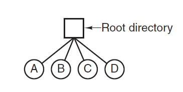
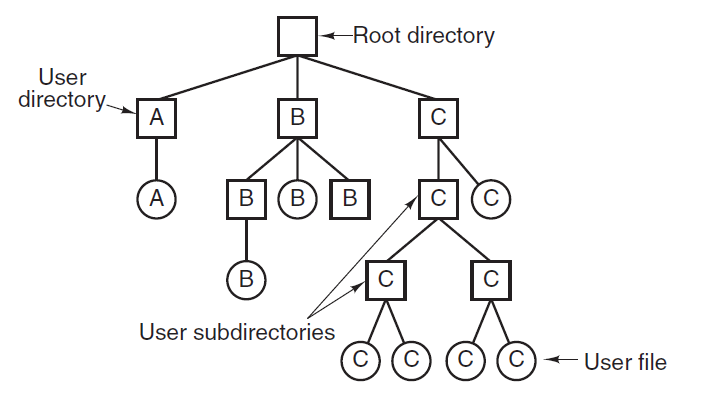

Directories
<<<<<<< HEAD
Directories or Folders are used by File Systems to keep track of files.
Directories are files themselves.
Single-Level Directory Systems
In Single-Level Directory System, one directory
contains all the files. This directory is sometimes called
a root directory.
Example:

Hierarchical Directory Systems
When there are a large number of files, finding a
single file in the directory would become very tough.
Hence hierarchical directory systems are preferred when there
are large number of files. This forms a tree of directories.
Example:

Path Names
When the file System is organized as a directory tree Path Names are used to specify the file names.
- Absolute Path Name: It consists of the path name
from the root directory to the file
Absolute path names always start at the root directory and
are unique.
Example :
Windows: \usr\ast\mailbox
UNIX: /usr/ast/mailbox
usr - root directory
ast - sub directory
mailbox - required File
- Relative Path Name: A user can designate one
directory as the current working directory,
in which case all path names not beginning at the
root directory are taken relative to the working directory.
Such path names which are relative to the working directory
are called relative path names.
Example:
Working Directory : /usr/ast
Absolute Path Name: /usr/ast/mailbox
Relative path Name: mailbox
Most of the operating systems that support a hierarchical
directory system have two special entries in every directory:
"." and ".." pronounced as "dot"
and "dotdot" respectively.
Dot refers to the current directory; dotdot refers to its parent.
Directory Operations
Following are a set of system calls allowed for managing
directories in UNIX-like operating systems.
- Create: A directory is created
- Delete: A directory is deleted
- Opendir: Directories can be read
- Closedir: When a directory has been read it
should be closed to free up internal table space.
- Readdir: This system call returns the next
entry in an open directory.
- Rename: As directories are also files, they
can be renamed the same way files can be.
- Link: This system call specifies an existing
file and a path name, and creates a link from the existing
file to the name specified by the path. This makes the
file appear in more than one directory.
This link is sometimes refered to as a
hard link, which just creates another file with a
link to the same underlying node.
- Unlink: A directory entry is removed.
If a file is present in multiple directories
then only the file in specified path is deleted.
Symbolic Link:
A symbolic link is a link to another name in the file system.
It can also be defined as the nickname for any file that contains a
reference to another file or directory in the form of an
absolute or relative path and that affects pathname resolution.
Also called a soft link.
External Links